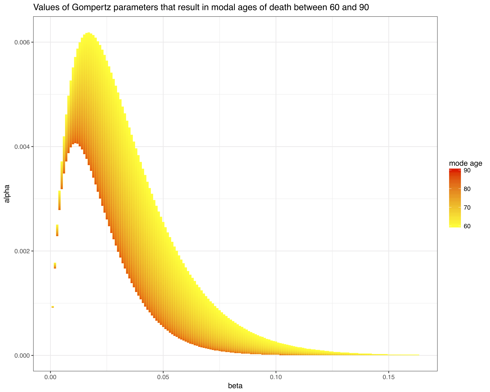

Gompertz mortality models
Introduction
The Gompertz model is one of the most well-known mortality models. It does remarkably well at explaining mortality rates at adult ages across a wide range of populations with just two parameters. This post briefly reviews the Gompertz model, highlighting the relationship between the two Gompertz parameters, \(\alpha\) and \(\beta\), and the implied mode age at death. I focus on the situation where we only observe death counts by age (rather than mortality rates), so estimation of the Gompertz model requires choosing \(\alpha\) and \(\beta\) to maximize the (log) density of deaths.
Gompertz mortality
Here are a few important equations related to the Gompertz model.1 The Gompertz hazard (or force of mortality) at age \(x\), \(\mu(x)\), has the exponential form \[ \mu(x) = \alpha e^{\beta x} \]
The \(\alpha\) parameter captures some starting level of mortality and the \(\beta\) gives the rate of mortality increase over age. Note here that \(x\) refers to the starting age of analysis and not necessarily age = 0. Indeed, Gompertz models don’t do a very good job at younger ages (roughly \(<40\) years).
Given the relationship between hazard rates and survivorship at age \(x\), \(l(x)\), \[ \mu(x) = -\frac{d}{dx} \log l(x) \] the expression for \(l(x)\) is \[ l(x) = \exp\left(-\frac{\alpha}{\beta}\left(\exp(\beta x) - 1\right)\right) \] It then follows that the density of deaths at age \(x\), \(d(x)\) is \[ d(x) = \mu(x) l(x) = \alpha \exp(\beta x) \exp\left(-\frac{\alpha}{\beta}\left(\exp(\beta x) - 1\right)\right) \] which probably looks worse than it is. \(d(x)\) tells us about the distribution of deaths by age. It is a density, so \[ \int d(x) = 1 \] Say we observe death counts by age, \(y(x)\), which implies a total number of deaths of \(D\). If we multiply the total number of deaths \(D\) by \(d(x)\), then that gives the number of deaths at age \(x\). In terms of fitting a model, we want to find values for \(\alpha\) and \(\beta\) that correspond to the density \(d(x)\) which best describes the data we observe, \(y(x)\).
Parameterization in terms of the mode age
Under a Gompertz model, the mode age at death, \(M\) is
\[ M = \frac{1}{\beta}\log \left(\frac{\beta}{\alpha}\right) \] Given a set of plausible mode ages, we can work out the relevant combinations of \(\alpha\) and \(\beta\) based on the equation above. For example, the chart belows shows all combinations of \(\alpha\) and \(\beta\) that result in a mode age between 60 and 90.

This chart suggests that plausible values of \(\alpha\) and \(\beta\) for human populations are pretty restricted. In addition, it shows the strong correlation between these two parameters: in general, the smaller the value of \(\beta\), the larger the value of \(\alpha\). This sort of correlation between parameters can cause issues with estimation. However, given we know the relationship between \(\alpha\) and \(\beta\) and the mode age, the Gompertz model can be reparameterized in terms of \(M\) and \(\beta\):
\[ \mu(x) = \beta \exp\left(\beta (x - M)\right) \] As this paper notes, \(M\) and \(\beta\) are much less correlated than \(\alpha\) and \(\beta\). In addition, the modal age has a much more intuitive interpretation than \(\alpha\).
Implications for fitting
Given the reparameterization, we now want to find estimates for \(M\) and \(\beta\) such that the resulting deaths density \(d(x)\) best reflects the data. If we assume that the number of deaths observed at a particular age, \(y_x\), are Poisson distributed, and the total number of deaths observed is \(D\), then we get the following hierarchical set up:
\[ y(x) \sim \text{Poisson} (\lambda(x))\\ \lambda(x) = D \cdot d(x)\\ d(x) = \mu(x) \cdot l(x)\\ \mu(x) = \beta \exp\left(\beta (x - M)\right) \\ l(x) = \exp \left( -\exp \left(-\beta M \right) \left(\exp(\beta x)-1 \right)\right) \] This can be fit in a Bayesian framework, with relevant priors put on \(\beta\) and \(M\).
End notes
This is part of an ongoing project with Josh Goldstein on modeling mortality rates for a dataset of censored death observations. Thanks to Robert Pickett who told me about the Tissov et al. paper and generally has interesting things to say about demography.
Footnotes
A good reference for this is Essential Demographic Methods, Chapter 3.↩︎